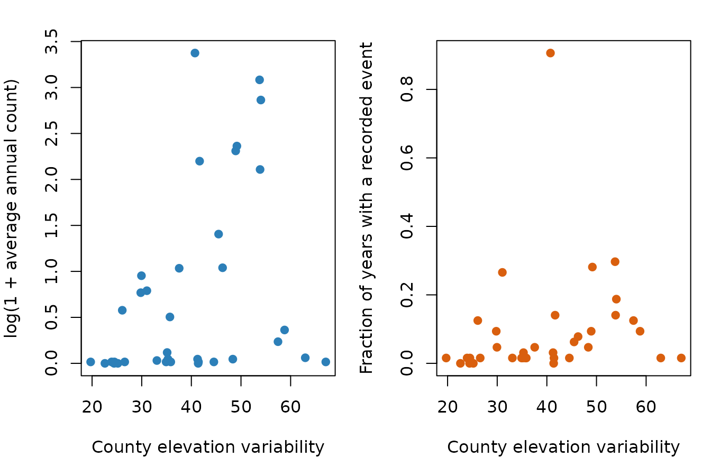
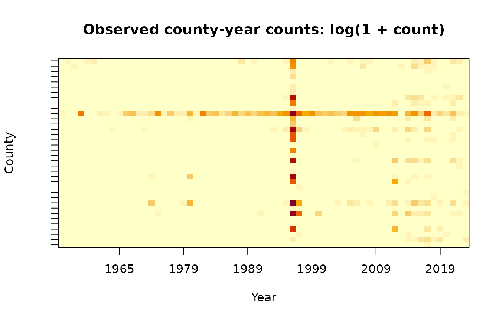
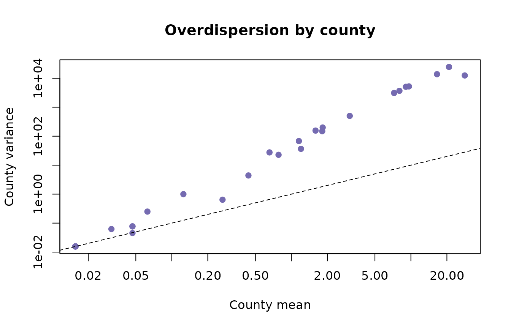
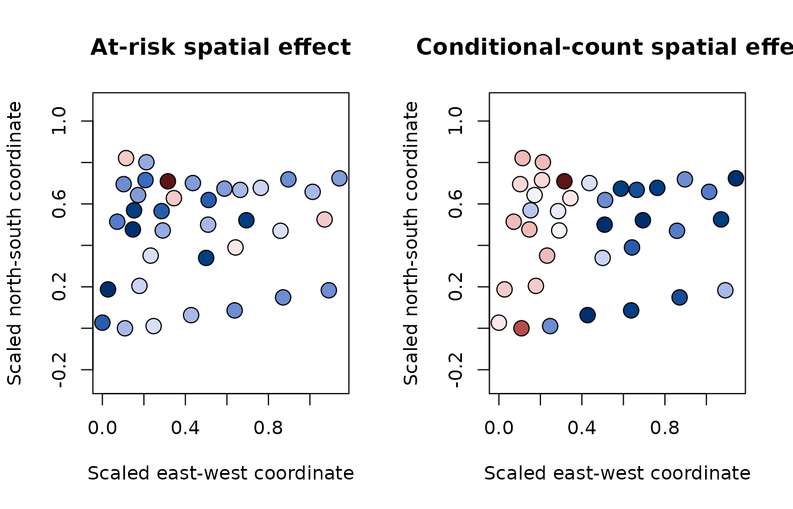
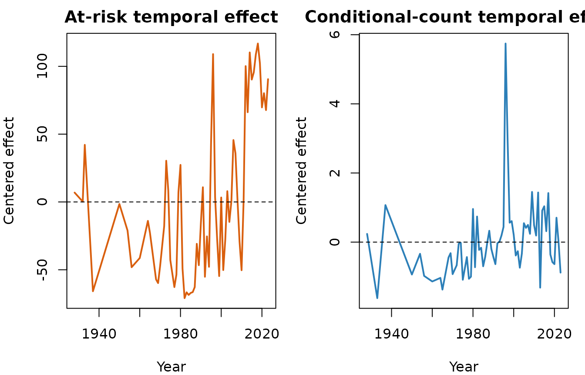

Oregon Landslides: A Spatiotemporal ZINB-GP Case Study
Source:vignettes/oregon-landslides.Rmd
oregon-landslides.RmdScope of the analysis
This vignette reproduces the main workflow used for the Oregon application in Scott and Huang, Imaging-derived spatiotemporal modeling of landslide counts with noisy Gaussian process random effects. The response is the number of recorded landslides in each Oregon county and calendar year. The fitted panel has 36 counties, 64 observed year levels, and one observation per county-year.
This is an areal model of recorded occurrence and intensity. It is not a grid-cell physical-hazard model. Elevation information begins on a raster but is aggregated to county support before modeling. Assigning a county total to every raster cell would create pseudo-replication and would change the scientific question.
The landslide archive is not a designed observation process. A recorded zero may mean no event or incomplete recording. For that reason, we interpret the logistic component as the probability that a county-year is in an at-risk/recordable state. The negative-binomial component describes the number of recorded events conditional on that state.
Read and align the panel
The small, analysis-ready files used here are installed with the package. The rows of the observation matrix are counties and the columns are years.
library(ZINB.GP)
#>
#> Attaching package: 'ZINB.GP'
#> The following object is masked from 'package:stats':
#>
#> kernel
data_dir <- system.file("extdata", "oregon", package = "ZINB.GP")
if (data_dir == "") {
data_dir <- file.path("..", "inst", "extdata", "oregon")
}
observations <- as.matrix(read.table(
file.path(data_dir, "landslides_county_year.dat")
))
county_data <- read.csv(file.path(data_dir, "counties.csv"))
years <- read.csv(file.path(data_dir, "Years.csv"))[[2]]
dim(observations)
#> [1] 36 64
mean(observations == 0)
#> [1] 0.9084201make_y_Vs_Vt() flattens the matrix in column-major
order. Its Vs and Vt rows follow the same
order, and their first columns are removed to define the baseline county
and year.
panel <- make_y_Vs_Vt(observations)
y <- panel$y
Vs <- panel$Vs
Vt <- panel$Vt
stopifnot(
length(y) == nrow(Vs),
nrow(Vs) == nrow(Vt),
ncol(Vs) == nrow(observations) - 1,
ncol(Vt) == ncol(observations) - 1
)The raster-derived covariate is an area-weighted county average of local elevation variability. Because the first county is the baseline, its covariate value contributes through the fixed-effect design just like every other county; only the GP indicator column is omitted.
Describe the data before fitting
The two panels below connect the covariate to the two model components. Average annual count is related to conditional intensity, while the fraction of nonzero years is related to the at-risk/recordable process.
county_mean <- rowMeans(observations)
county_nonzero <- rowMeans(observations > 0)
par(mfrow = c(1, 2), mar = c(4, 4, 2, 1))
plot(
elevation_sd, log1p(county_mean),
xlab = "County elevation variability",
ylab = "log(1 + average annual count)",
pch = 19, col = "#2C7FB8"
)
plot(
elevation_sd, county_nonzero,
xlab = "County elevation variability",
ylab = "Fraction of years with a recorded event",
pch = 19, col = "#D95F0E"
)
The county-year heatmap exposes three features that motivate the model: approximately 90% zeros, strong county heterogeneity, and temporal clusters of large counts.
image(
x = seq_along(years),
y = seq_len(nrow(observations)),
z = t(log1p(observations)),
axes = FALSE,
xlab = "Year",
ylab = "County",
main = "Observed county-year counts: log(1 + count)",
col = hcl.colors(25, "YlOrRd", rev = TRUE)
)
year_ticks <- pretty(seq_along(years))
year_ticks <- year_ticks[year_ticks >= 1 & year_ticks <= length(years)]
axis(1, at = year_ticks, labels = years[year_ticks])
axis(2, at = seq_len(nrow(observations)), labels = FALSE)
box()
Overdispersion is also visible without fitting a model. Most counties lie well above the Poisson reference line, on which the mean equals the variance.
county_variance <- apply(observations, 1, var)
plot(
county_mean, county_variance,
log = "xy",
xlab = "County mean",
ylab = "County variance",
pch = 19, col = "#756BB1",
main = "Overdispersion by county"
)
#> Warning in xy.coords(x, y, xlabel, ylabel, log): 4 x values <= 0 omitted from
#> logarithmic plot
#> Warning in xy.coords(x, y, xlabel, ylabel, log): 4 y values <= 0 omitted from
#> logarithmic plot
abline(a = 0, b = 1, lty = 2)
Distance matrices and model fit
The squared-exponential kernel is \(K_\ell(h,h')=\exp\{-\lVert h-h'\rVert^2/\ell^2\}\). The package accepts ordinary pairwise distances and squares them internally. The county distances below are multiplied by 100 to use a convenient numerical scale; time is measured in years. A new location or time must use exactly the same scaling.
Ds <- 100 * as.matrix(read.table(
file.path(data_dir, "county_dist_scale.dat")
))
Dt <- as.matrix(read.table(file.path(data_dir, "time_dist.dat")))
county_coords <- as.matrix(read.table(
file.path(data_dir, "counties_coords.dat")
))
stopifnot(
nrow(Ds) == ncol(Vs) + 1,
nrow(Dt) == ncol(Vt) + 1,
nrow(county_coords) == nrow(Ds)
)The complete model puts spatial and temporal GPs in both components. The range proposal often needs tuning; a useful production analysis should use multiple, long chains. This expensive call is not run when CRAN builds the vignette.
lt_prior <- list(max = 125, mh_sd = 0.5, a = 1, b = 0.001)
ls_prior <- list(max = 250, mh_sd = 3, a = 1, b = 0.001)
fit <- ZINB_GP(
X = X,
y = y,
coords = county_coords,
Vs = Vs,
Vt = Vt,
Ds = Ds,
Dt = Dt,
nsim = 162000,
burn = 20000,
thin = 100,
save_ypred = FALSE,
print_progress = TRUE,
use_count_gp = TRUE,
use_inflation_gp = TRUE,
ltPrior = lt_prior,
lsPrior = ls_prior
)For the remaining examples, we use a compact set of posterior draws from a long run. The archive contains regression, random-effect, covariance, and dispersion draws needed for the analyses below while keeping the installed dataset small. Exact values can vary across chains; the workflow and interpretation are the focus here.
Fixed effects
The interval table keeps the two submodels separate. An elevation
coefficient in Alpha changes the probability of being at
risk; one in Beta changes expected count conditional on
being at risk.
interval <- function(x) {
quantile(x, probs = c(0.025, 0.5, 0.975), names = FALSE)
}
fixed_effect_intervals <- rbind(
"At-risk: intercept" = interval(fit$Alpha[, 1]),
"At-risk: elevation variability" = interval(fit$Alpha[, 2]),
"Count: intercept" = interval(fit$Beta[, 1]),
"Count: elevation variability" = interval(fit$Beta[, 2])
)
colnames(fixed_effect_intervals) <- c("2.5%", "median", "97.5%")
round(fixed_effect_intervals, 3)
#> 2.5% median 97.5%
#> At-risk: intercept -0.196 -0.007 0.189
#> At-risk: elevation variability -0.169 0.014 0.177
#> Count: intercept -0.263 -0.076 0.129
#> Count: elevation variability -0.036 0.049 0.134Both elevation intervals include zero in these archived draws. After residual spatial structure is included, the data do not distinguish a marginal county-level elevation effect from zero. That is not evidence that topography is irrelevant to individual landslides; it is a statement about this aggregated covariate at county support.
Reconstruct and recenter baseline effects
The sampled GP matrices omit the baseline level. Insert zero in the first column to reconstruct effects on the fitted baseline scale. For maps and time-series plots, a centered representation is often easier to read. Subtracting the mean random effect from every level and adding it to the intercept preserves every linear predictor.
recenter_draws <- function(reduced_effect, intercept) {
full_effect <- cbind(0, reduced_effect)
shift <- rowMeans(full_effect)
list(
effect = sweep(full_effect, 1, shift),
intercept = intercept + shift
)
}
at_risk_space <- recenter_draws(fit$A, fit$Alpha[, 1])
count_space <- recenter_draws(fit$C, fit$Beta[, 1])
at_risk_time <- recenter_draws(fit$B, at_risk_space$intercept)
count_time <- recenter_draws(fit$D, count_space$intercept)
# One numerical check: centering preserves the spatial contribution.
j <- 1
s <- 10
baseline_scale <- fit$Alpha[j, 1] + c(0, fit$A[j, ])[s]
centered <- at_risk_space$intercept[j] + at_risk_space$effect[j, s]
stopifnot(isTRUE(all.equal(baseline_scale, centered)))The supplied coordinates are county centroids on the analysis scale. A centroid display communicates the spatial pattern while keeping the installed data compact and the example independent of spatial plotting packages.
plot_spatial_effect <- function(value, title) {
palette <- hcl.colors(30, "Blue-Red 3")
bins <- cut(value, breaks = 30, include.lowest = TRUE)
plot(
county_coords[, 1], county_coords[, 2],
asp = 1, pch = 21, cex = 1.8,
bg = palette[as.integer(bins)],
xlab = "Scaled east-west coordinate",
ylab = "Scaled north-south coordinate",
main = title
)
}
par(mfrow = c(1, 2))
plot_spatial_effect(
colMeans(at_risk_space$effect),
"At-risk spatial effect"
)
plot_spatial_effect(
colMeans(count_space$effect),
"Conditional-count spatial effect"
)
The two temporal matrices correspond to different linear predictors:
B belongs to the at-risk model and D belongs
to the conditional count model. Separate panels preserve that
distinction in the interpretation.
par(mfrow = c(1, 2), mar = c(4, 4, 2, 1))
plot(
years, colMeans(at_risk_time$effect),
type = "l", lwd = 2, col = "#D95F0E",
xlab = "Year", ylab = "Centered effect",
main = "At-risk temporal effect"
)
abline(h = 0, lty = 2)
plot(
years, colMeans(count_time$effect),
type = "l", lwd = 2, col = "#2C7FB8",
xlab = "Year", ylab = "Centered effect",
main = "Conditional-count temporal effect"
)
abline(h = 0, lty = 2)
The paper identifies 1996 as a pronounced temporal shock. The event should be checked against the raw annual counts as well as the posterior effect; a temporal GP can summarize an observed pattern but cannot by itself establish its physical cause.
Posterior fitted means
For posterior draw \(m\), the fitted marginal mean is
\[ \operatorname{E}(Y_j\mid\theta^{(m)}) = \operatorname{logit}^{-1}(\eta_{1j}^{(m)}) \times r^{(m)}\exp(\eta_{2j}^{(m)}). \]
The following calculation uses every tenth archived draw and compares observed and fitted annual totals. It is a fitted-data check, not out-of-sample validation.
draw_id <- seq(1, nrow(fit$Alpha), by = 10)
eta1 <- fit$Alpha[draw_id, , drop = FALSE] %*% t(X) +
fit$A[draw_id, , drop = FALSE] %*% t(Vs) +
fit$B[draw_id, , drop = FALSE] %*% t(Vt)
eta2 <- fit$Beta[draw_id, , drop = FALSE] %*% t(X) +
fit$C[draw_id, , drop = FALSE] %*% t(Vs) +
fit$D[draw_id, , drop = FALSE] %*% t(Vt)
fitted_mean <- plogis(eta1) * exp(eta2)
fitted_mean <- sweep(fitted_mean, 1, fit$R[draw_id], "*")
posterior_mean <- colMeans(fitted_mean)
observed_by_year <- colSums(observations)
fitted_by_year <- colSums(matrix(
posterior_mean,
nrow = nrow(observations)
))
plot(
years, log1p(observed_by_year),
type = "l", lwd = 2, col = "black",
xlab = "Year", ylab = "log(1 + annual total)",
main = "Observed and posterior fitted annual totals"
)
lines(years, log1p(fitted_by_year), lwd = 2, col = "#2C7FB8")
legend(
"topleft",
legend = c("Observed", "Posterior fitted mean"),
col = c("black", "#2C7FB8"), lwd = 2, bty = "n"
)Large disagreements can indicate lack of fit, insufficient mixing, or both. A stronger analysis would also inspect zero fractions, upper-tail counts, and held-out county-years.
MCMC wrappers and effective sample size
Package output is intentionally a list of ordinary vectors and
matrices, which makes it easy to use established diagnostics. With
coda, bind scalar parameters into one matrix and wrap it as
an mcmc object:
scalar_draws <- cbind(
alpha_intercept = fit$Alpha[, 1],
alpha_elevation = fit$Alpha[, 2],
beta_intercept = fit$Beta[, 1],
beta_elevation = fit$Beta[, 2],
range_time_at_risk = fit$L1t,
range_time_count = fit$L2t,
range_space_at_risk = fit$L1s,
range_space_count = fit$L2s,
dispersion = fit$R
)
chain <- coda::mcmc(scalar_draws)
round(coda::effectiveSize(chain), 1)
#> alpha_intercept alpha_elevation beta_intercept beta_elevation
#> 1000.0 894.4 884.9 1000.0
#> range_time_at_risk range_time_count range_space_at_risk range_space_count
#> 105.8 251.2 179.7 497.6
#> dispersion
#> 102.1ESS estimates the number of independent draws represented by an autocorrelated chain. A nominal sample size of 1,000 can therefore contain far less information for a slowly mixing range parameter. Trace and autocorrelation plots help locate the problem:
par(mfrow = c(1, 2))
coda::traceplot(chain[, "range_space_count"], main = "Trace: count spatial range")
coda::autocorr.plot(
chain[, "range_space_count"],
auto.layout = FALSE,
main = "Autocorrelation"
)For independent chains, create one mcmc object per fit
and combine them. This enables between-chain diagnostics such as
split-chain comparisons and Gelman-Rubin statistics.
extract_scalars <- function(x) {
cbind(
alpha_intercept = x$Alpha[, 1],
alpha_elevation = x$Alpha[, 2],
beta_intercept = x$Beta[, 1],
beta_elevation = x$Beta[, 2],
range_time_at_risk = x$L1t,
range_time_count = x$L2t,
range_space_at_risk = x$L1s,
range_space_count = x$L2s,
dispersion = x$R
)
}
# fits must come from independent runs with different random-number seeds.
chains <- coda::mcmc.list(lapply(fits, function(x) {
coda::mcmc(extract_scalars(x))
}))
coda::gelman.diag(chains, multivariate = FALSE)
coda::effectiveSize(chains)The posterior package is another convenient wrapper. It
provides bulk and tail ESS using conventions shared by modern Bayesian
software:
draws <- posterior::as_draws_matrix(scalar_draws)
posterior::summarise_draws(
draws,
posterior::mean,
posterior::sd,
posterior::ess_bulk,
posterior::ess_tail
)With only one chain, \(\widehat R\) cannot assess between-chain convergence. For release-quality scientific work, use several independent chains, examine bulk and tail ESS, inspect trace plots, and extend or retune chains when range parameters mix slowly. Thinning reduces storage and plotting cost; it does not repair poor mixing or create information.